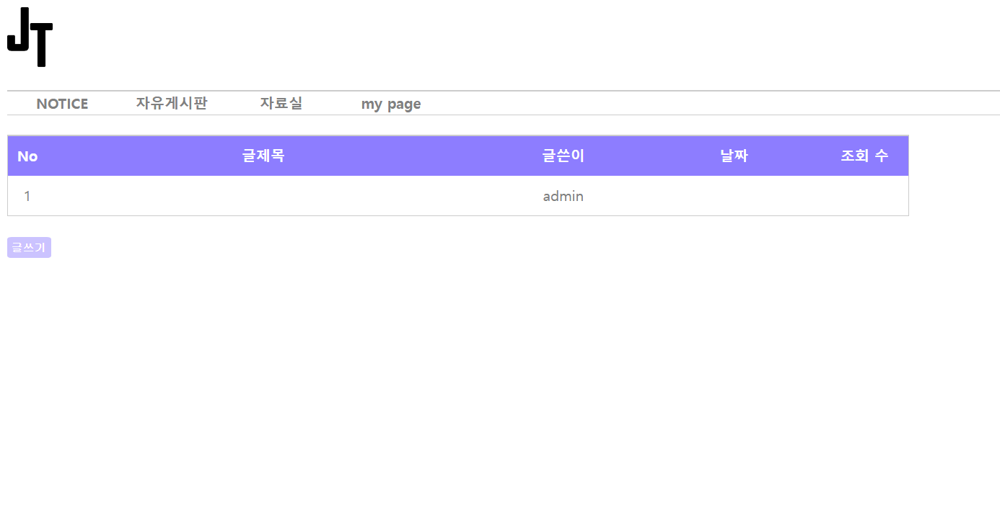

<div class="baby">
    <figure Onclick="location.href='img/jungtong1.png'">
        
        <figcaption>-2022-
                <br>&nbsp;웹서비스 연습을 하기위해
                <br>&nbsp;정보통신공학과 친구들이 실제로 사용할 만한 사이트를 만들어 보고자
                <br>&nbsp;php, myslq을 사용하여 구름환경에서 구축해본 실서버 입니다.
        </figcaption>
    </figure>
    <figure Onclick="location.href='img/jungtong2.png'">
        
        <figcaption>-2022-
                <br>&nbsp; 학과 자료를 올릴 용도의 자료게시판, 자유게시판, 공지게시판이 만들어져 있습니다.
        </figcaption>
    </figure>
    <figure Onclick="location.href='https://github.com/breakpack/Project-JT'">
        
        <figcaption>-코드-
                <br>&nbsp;전체 html, php, css코드를 담은 git입니다!
        </figcaption>
    </figure>
</div>